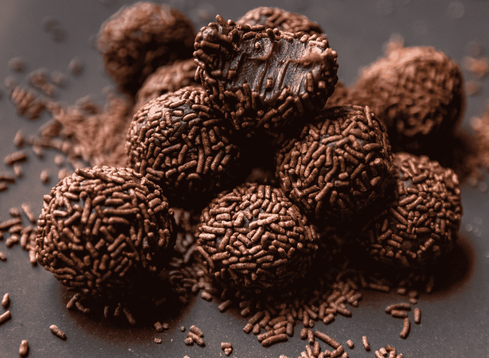

Brigadeiro
Homepage
Brigadeiro

Description
Brigadeiro is a beloved Brazilian sweet treat made by cooking sweetened condensed milk, cocoa powder, and butter until thickened, then rolling the mixture into small balls and coating them in chocolate sprinkles. Soft, fudgy, and rich, brigadeiros are a staple at Brazilian celebrations, especially birthdays, and are enjoyed by children and adults alike.
Ingredients
- Sweetened Condensed Milk: 1 can (400g)
- Cocoa Powder: 2 tbsp
- Butter: 2 tbsp
- Chocolate Sprinkles: as needed
Steps
- In a saucepan, combine condensed milk, cocoa powder, and butter.
- Cook over medium heat, stirring constantly, until thick and it pulls away from the bottom (about 10 minutes).
- Pour onto a greased plate and let cool.
- Once cool, shape into small balls and roll in chocolate sprinkles.